Floor 70
finish schedule
Three style submittals for the environment, each rendered from the game camera at 640 × 360 with the real voxel rigs, the real masonry and the real Kit: materials, props, signs, destruction, light and the city outside the curtain wall.
Look test: Babel at 06:02
Blockwork room, Cycles city through the glass · Jonas's picks: route A, blue morningJonas asked for a city "super sick and realistic" behind the pixel room. The room still renders at 640 × 360 and is scaled 3× with nearest filtering. The city is pre-rendered in Blender Cycles from Babel's own data and drawn at native resolution behind the world view. The world SubViewport is transparent where the curtain-wall glass is, so the city is sharp and the room is pixel art. Both frames below are single 1920 × 1080 captures of that composite from Godot (tools/art/look_city.tscn).
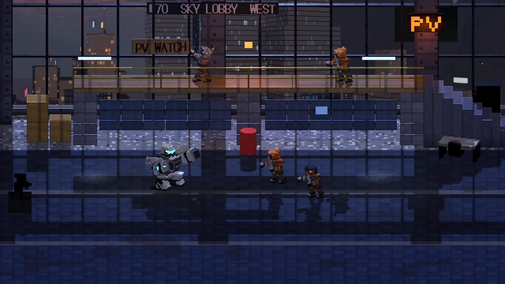
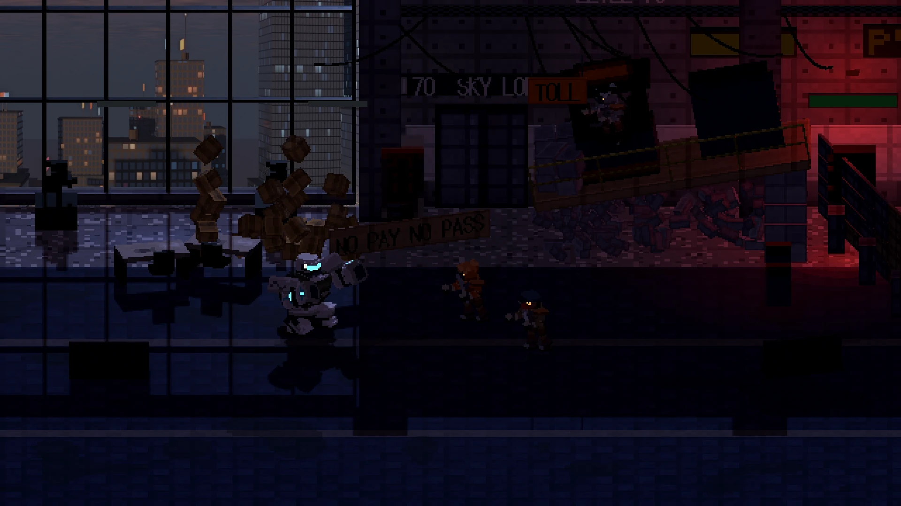
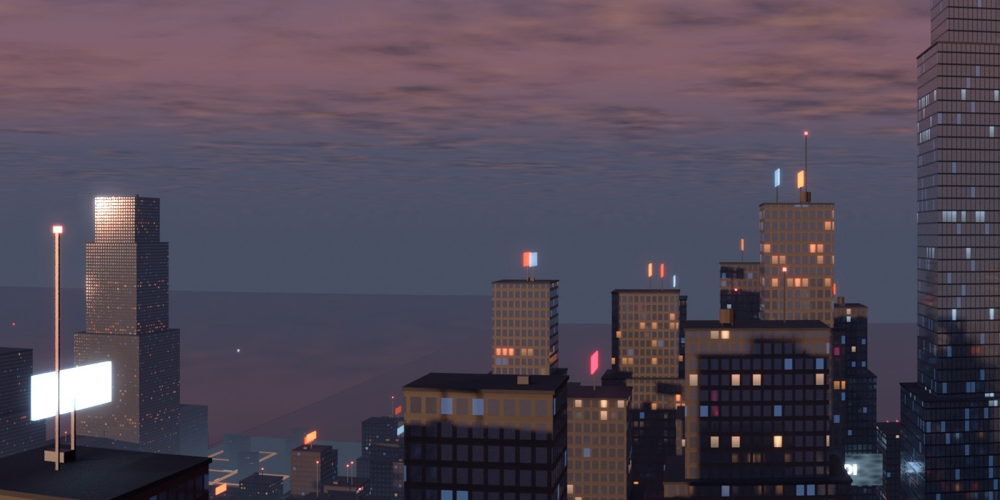
L-4Parallax: the camera moves ±3 m
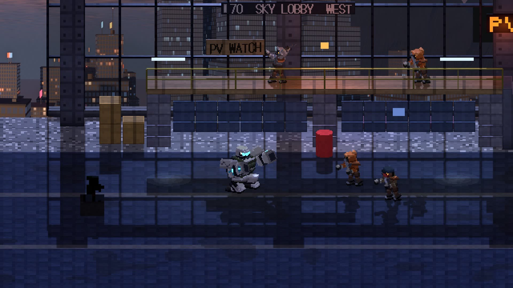
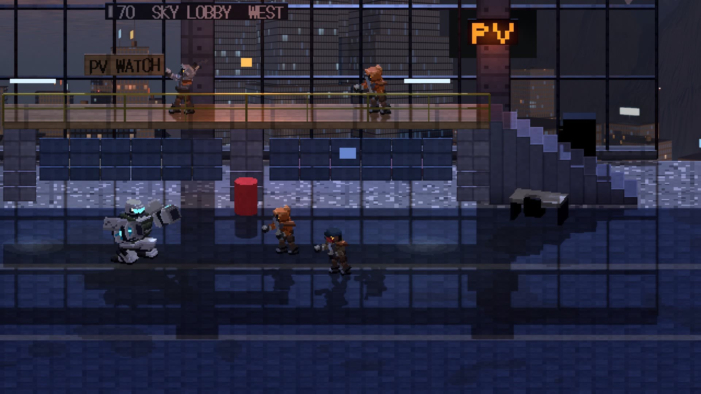
L-5The plate: one strip, three depth layers
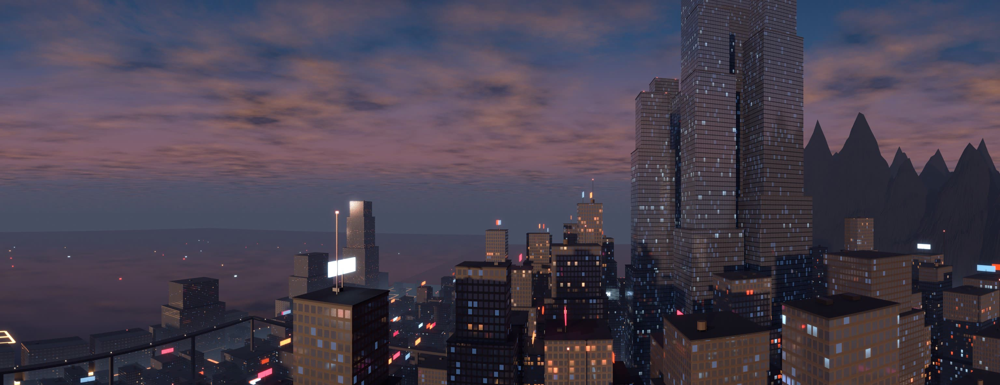
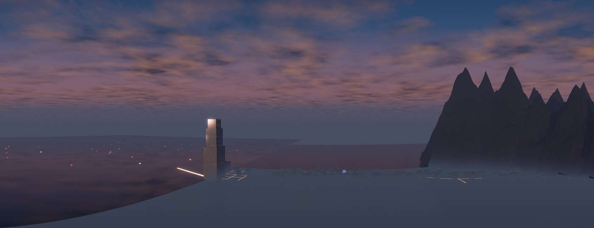
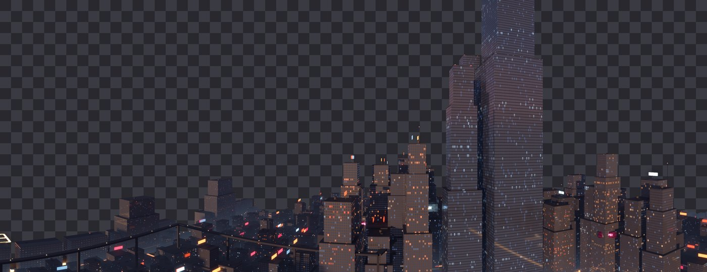
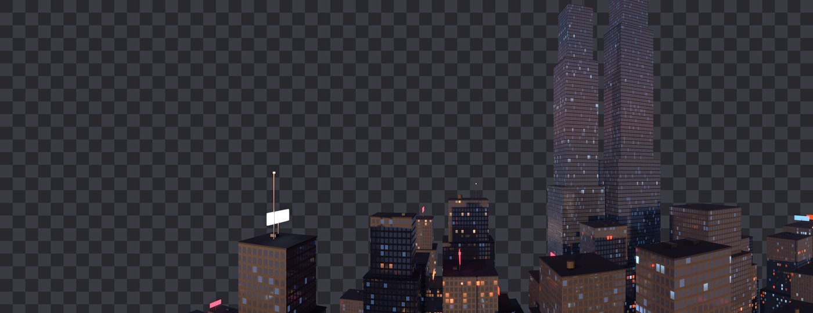
What the plate is made of
- tools/art/city_blender.py (Blender 5.0, Cycles, headless) reads the Dark City Shining Babel setting data: 42 named buildings, 1,219 procgen buildings, streets, roads, tramway, sea wall, ridge and sea.
- Buildings: tall towers get setbacks and crowns; the Pinnacle gets its spire and strobe.
- Facades: a procedural window grid in world metres, per building type. Each window is lit or dark, with a room colour, a ceiling-to-floor gradient, blinds, a lamp pool or a TV. Temperature, tone and how many rooms are lit are set per building (a face attribute). Dark glass reflects the sky, and each floor has a spandrel band.
- Roofs: AC units, water tanks, antennas with red beacons, rooftop billboards.
- Neon: blade signs and strips on the Town and Lux faces. Holo ads carry Opticals' CODEX copy (OH-DI, NERPS!, KODAMA, HIGH WATER WE ARE HIRING).
- Streets and roads glow sodium, with head- and tail-light dashes. The tramway is lit, and the sea wall carries lamps; boats sit on the sea.
- Air and water: height and distance fog computed per camera ray (street mist low, violet haze high), a storm cloud deck in the world shader, and a glossy sea with wave bumps.
- Afterwards city_post.py adds bloom (Pillow).
- No image textures, no downloads, no generators; the only font is the DejaVu the game already ships.
One colour script with the film (agreed with Opticals)
- 06:02, sun 2.5° up at bearing 120°, colour #ffb070. The camera looks west-north-west over the core, away from the sun, in both the film and the game.
- Earth shadow #1c2436 under a Belt of Venus #b5687e, storm blue #22386a, zenith #0b1733. Clouds are dark storm blue with undersides lit #ffb070.
- Windows are three parts sodium #ffb35c to one part #bfe6ff. Neon is PV orange #ff6a1f and magenta #ff3d8b. HW cyan #1fd6ea appears only on Tower 3 and High Water ads.
- The room's section moods (night, flicker, blackout) are unchanged; only the city is at dawn.
Budgets
- Dev PC GPU: one layer per Blender process, 4096 × 1580, 64 samples with the OptiX denoiser, and a pause between runs. Times: far 17 s, mid 23 s, near 15 s, composite 37 s. The whole city set takes about 1.5 min of GPU time. There were no long batches.
- Web (computed, not yet measured in an export): in the frame, one plate pixel is 0.9 native px at 1080p, so a 3072-wide strip covers 1080p. In VRAM-compressed form (S3TC/BPTC on desktop Web), the three layers come to about 11 MB of VRAM and a similar download before pck compression. As lossy WebP, the download is about 0.5 MB, but each 3072 layer takes about 19 MB of VRAM once decoded (RGBA8). The mid and near layers crop to their alpha bounds. I'll measure both in the Web export before choosing.
- Frame cost: three textured quads behind the world view, plus the transparent SubViewport. The look test drew 241–454 calls in the 3D view.
Next, on art-lab, in steps
- The backdrop node for game_root (Readout's hybrid already draws the world as a scaled SubViewport): plate layers behind it, parallax from the level camera, transparent where there is glass. Web export measurement.
- Animated overlays at native resolution: traffic streams on the roads, aircraft and drone lights, beacon blinks, window flicker through a mask, holo-ad loops, a searchlight, rain in front. These shaders join the Warmup.
- Blockwork production: blockwork.gdshader into Pal/LevelKit, Debris and BrickWall in local space, the prop kit into the level, the Kit.sign() restyle, PV orange in one line of Pal, and the section moods.
Rulings needed
- Tower 3's height. The data has Tower 3 at 160 m (32 units), which can't hold Floors 70–75. The plate puts Floor 70 at about 255 m, above the Lux towers around it, so the view clears them. The data should raise Tower 3 to about 275 m; Opticals flagged the same.
- The horizon is placed artistically. It sits about 60 % up the glass so the skyline clears the gallery deck. Physically it would sit at eye height, about 1.6 m.
Prop pass: before and after
Jonas: "no plain yellow squares or plain red exploding cylinders"Every breakable box and piece of set dressing in Floor 70 and the training arena is now a voxel model on the characters' own grid (0.064 m, 2 screen pixels per voxel), so props and people read as one hand. Details are voxel paint: planks and gaps, steel straps, stencils, shipping labels, dents, rust runs, PV tags. The physics is unchanged, with the same box collider, hp and mass. When a prop breaks, the pieces are Blockwork blocks in the prop's own colour. Built by tools/vox/env_props.py with Armature's sculpt helpers.
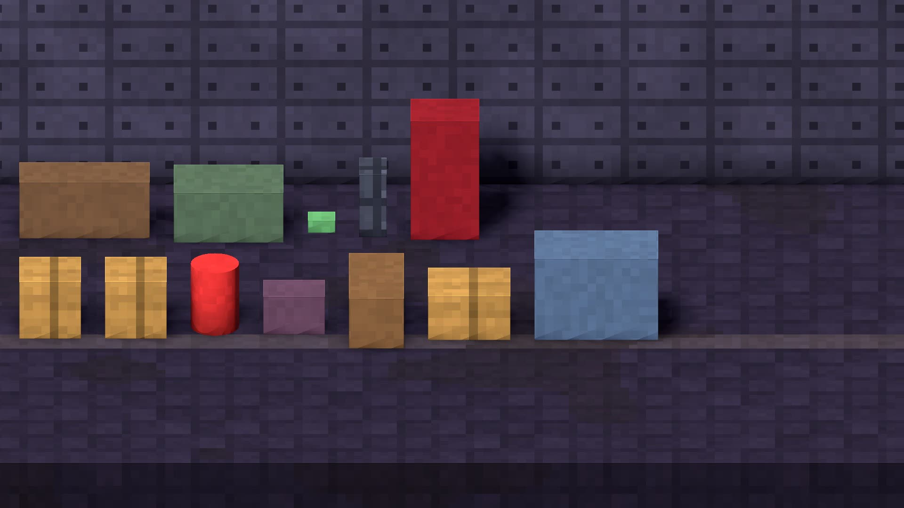
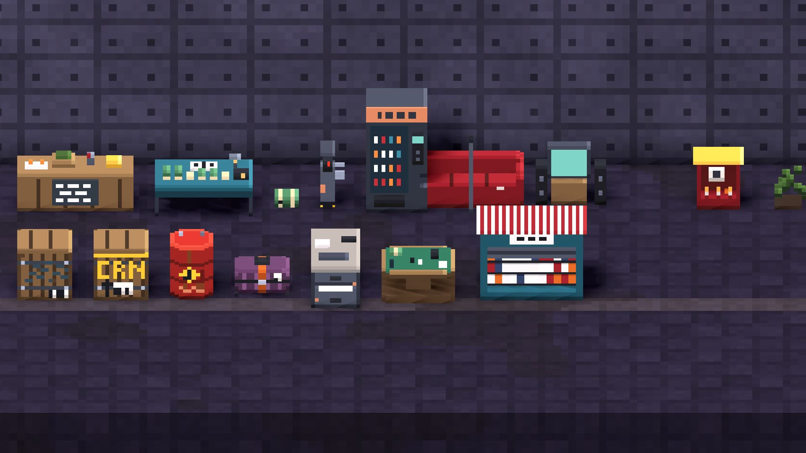
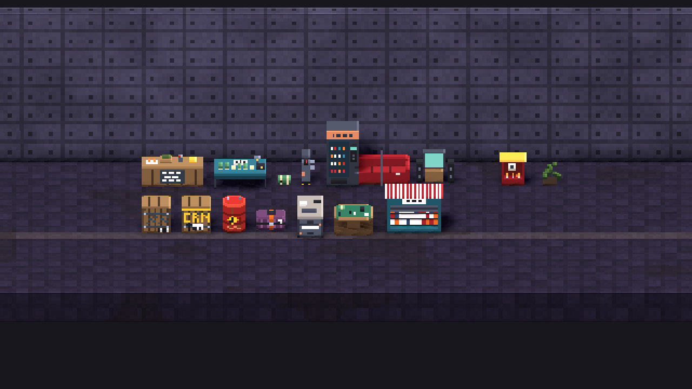
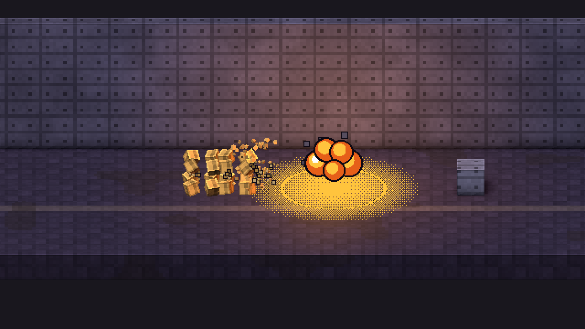
P-5In the game: Ki, Shō, the lookout, Ketsu (1920 × 1080 captures of the real main scene)
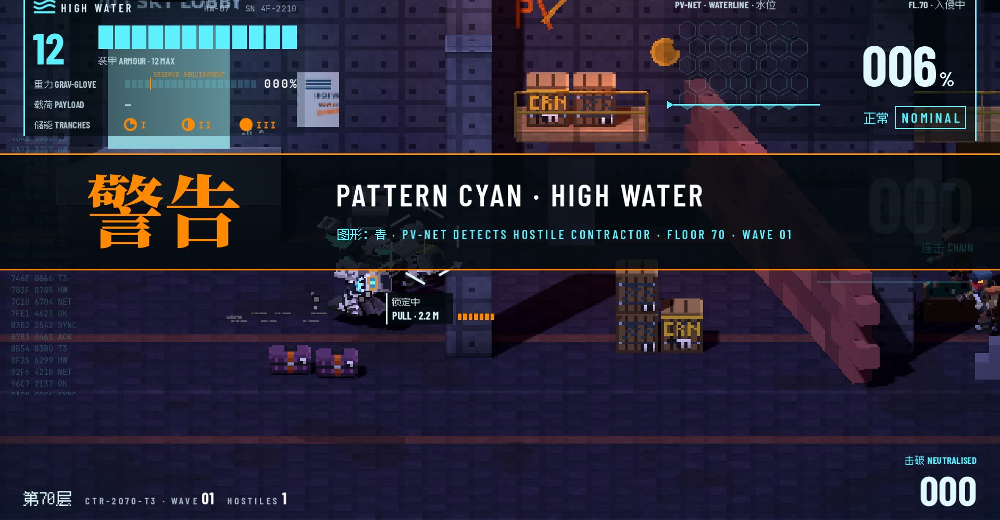
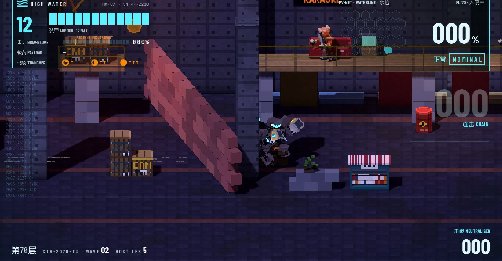
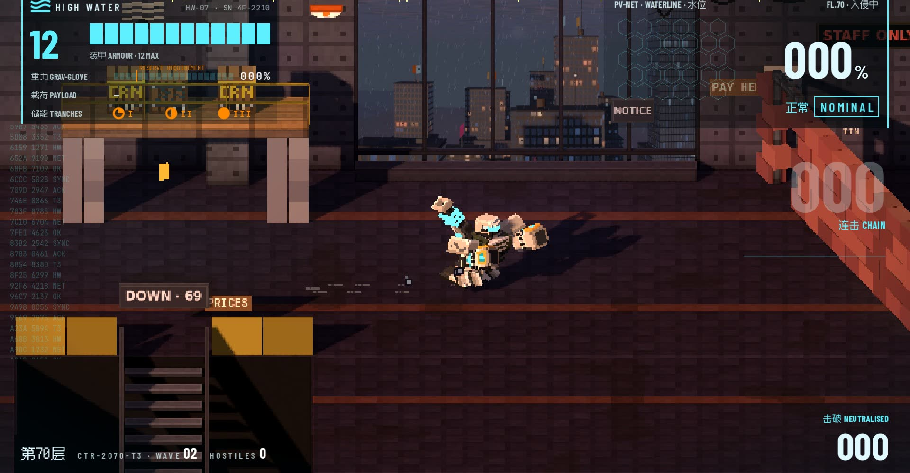
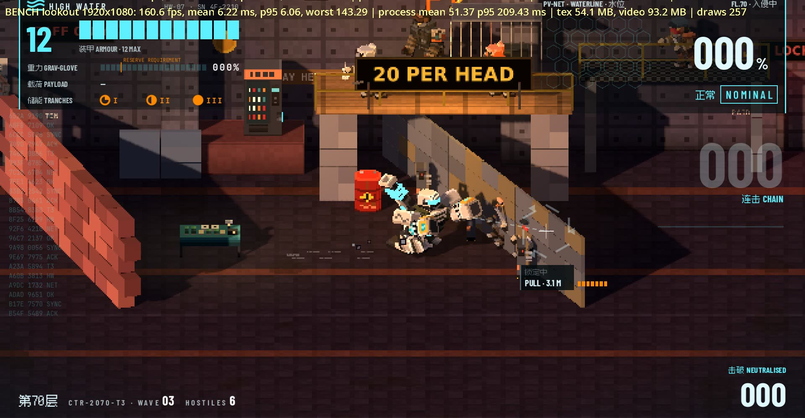
What changed in the code
- Props.dress(debris, name) swaps a Debris box's look for the model and fits it to the box. Crates and drums keep their colours, so their sounds and blasts don't change.
- Props.node(name) handles static dressing.
- The props are hooked into LevelKit (crates, drums, cash, turnstiles), level_70 and the arena.
- The meshes are baked to .mesh.res by tools/art/bake_props.gd.
Web cost (2560 × 1440, Chrome)
- Paired A/B with the models and the boxes on the same bodies: Ki +0.03 / −0.03 ms, market +0.10 / +0.07 ms, Ketsu +0.55 / +0.00 ms. That is noise, and the draw calls are unchanged.
- Level build: meshing the .vox files at load cost about 300 ms on the Web. Baking the meshes brought that down to 11 ms.
Still placeholder
- The booth's bus tokens are 4 px coins.
- The stall canopies are plain colour.
- The doorman's dropped door is Armature's and Hitlag's.
- The sign housings are Drywall's.
Crisp lettering, and where the blur was
Jonas: "the pixelation makes fonts rough and a few things blur"Captured at 2560 × 1440 (a 3× world) and at 1700 × 1000 (a non-integer window, 2× world). The world scale is always a whole number with nearest filtering, no MSAA, FXAA or TAA is on, and Blockwork, the props and the rigs are crisp. The blur was the lettering. Signs and posters baked their text into 64 px/m textures inside the 640 × 360 world, where a linear filter shrank them to 30 px/m before the 3–4× scale-up. Now the world keeps each sign's panel, frame and housing (pixel art) plus an invisible text mark, and SignText sets the lettering at native resolution in the sign's own font, projected onto the sign by the level camera. The mark decides per pixel whether the text shows, so a thug in front hides the lettering along with the panel. Lit signs take their light from the world pixel under each glyph.
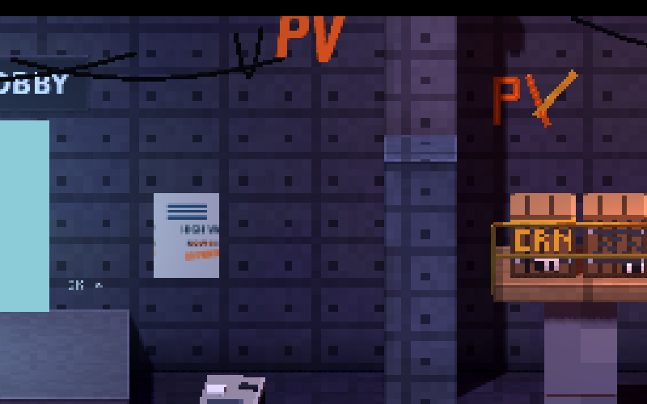
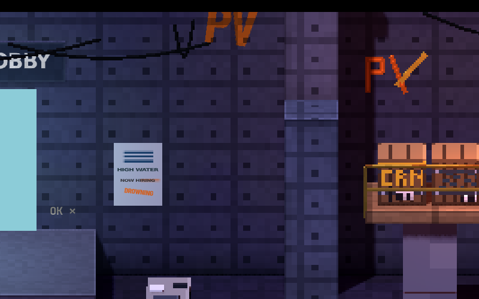
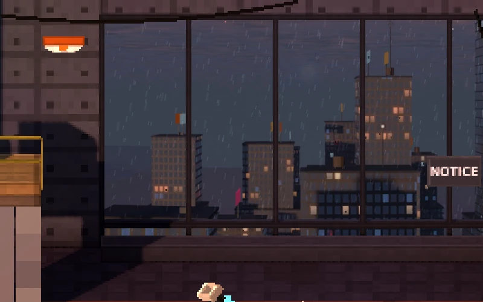
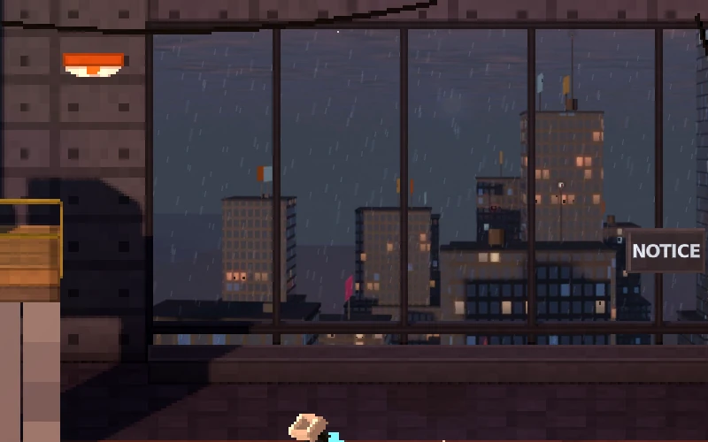
Blur audit
- World scale: a whole number with nearest filtering at every window size, crisp. At a non-integer window the world drops to the next whole scale and centres.
- AA: none set, so no MSAA, FXAA or TAA.
- Sign and poster text: fixed (above).
- Blockwork: the only derivative it takes is the one-pixel rim, with no texture sampling; crisp.
- Prop meshes: greedy quads carry one colour each, so nothing interpolates; crisp.
- City plates: they were scaled 1.2× up at 4×. Fixed: re-exported at 120 px/m, +1.6 MB S3TC.
- Not ours: the HUD at fractional UI scales (Readout's layout).
Web cost (Chrome, 2560 × 1440)
- Video memory dropped from 191 to 125 MB, because the baked sign viewports are gone from the game.
- Frame time, paired A/B with the lettering on and off (20 windows): −0.16, −0.85, +0.47, +0.14, +0.17, −2.44 ms. A control with no crisp signs moved +1.15, +0.45, −0.15 ms, so the lettering sits inside the noise. The machine was shared during these runs.
- Per frame the cost is three unprojections per sign on screen, and one shared material per kind of light, so the labels batch.
F70 Village Lobby, F71 Labelling Farm
props from Jonas's floor picks · same voxel pipelineFourteen new models from Jonas's floor picks, made with tools/vox/floor_props.py at the sizes of Drywall's tagged boxes. The tagged boxes switch to the models automatically (Props.dress_tagged runs in Stage before static batching, and the level batches the props one MultiMesh per model). Server racks alternate: every third one has the laundry out on its exhaust.
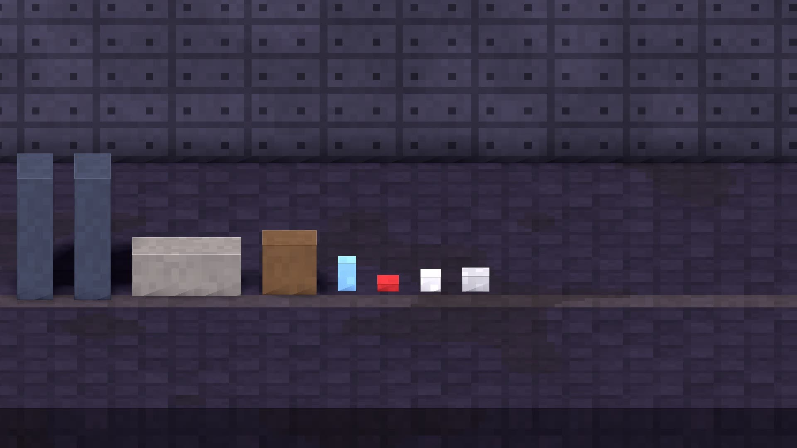
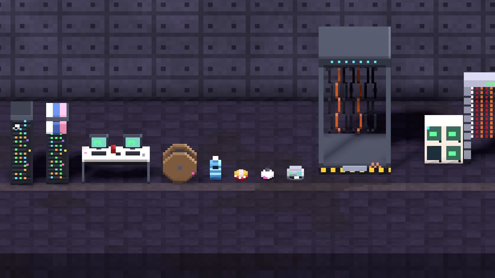
- server rack, with nail-polish cable tags and the colour key taped on (71.2.01)
- the rack with laundry on the exhaust (71.2.05)
- labelling desk (a green box drawn round a thing in a picture)
- cable spool, 19 L water bottle
- routers in a biscuit tin and a rice cooker (71.2.04), badge printer
- back row: the PV-NET core's frame (the glass glows inside it in the level), CRT stack, security arch with a bead curtain (70.2.05), the stove, the whiteboard, a world clock (70.2.04)
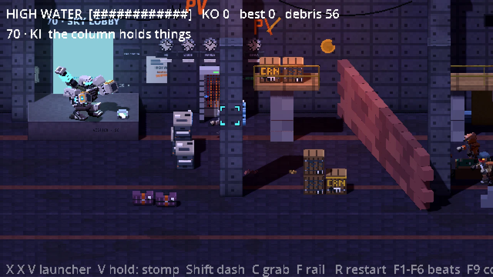
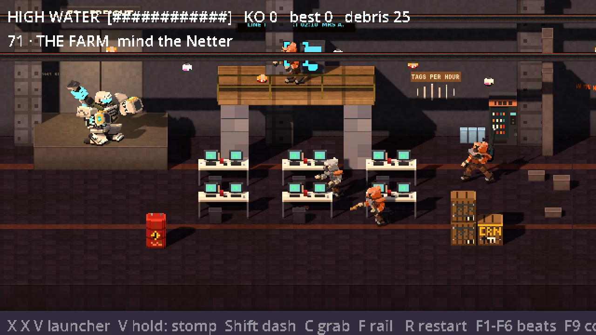
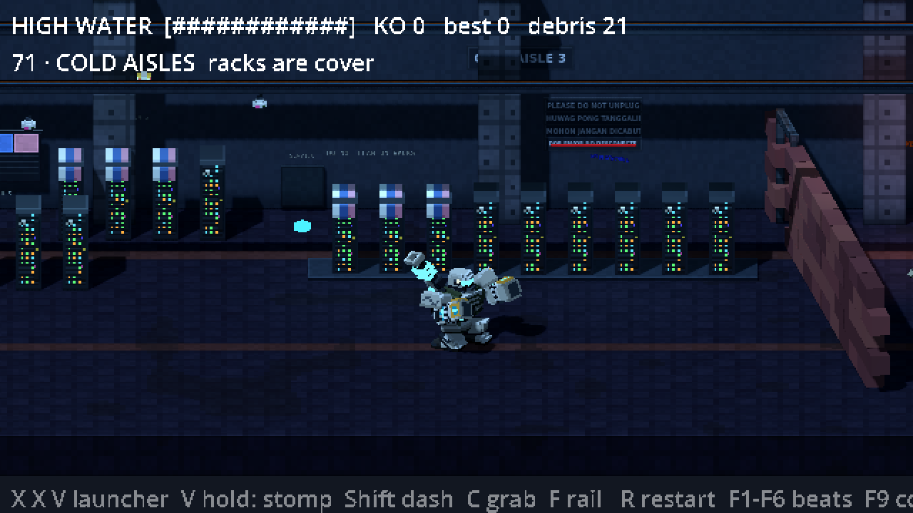
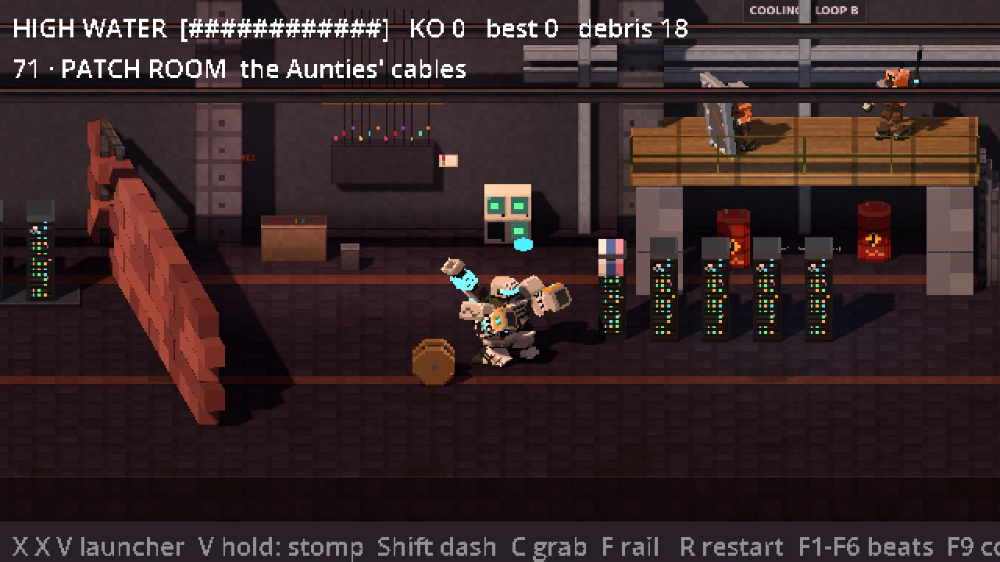
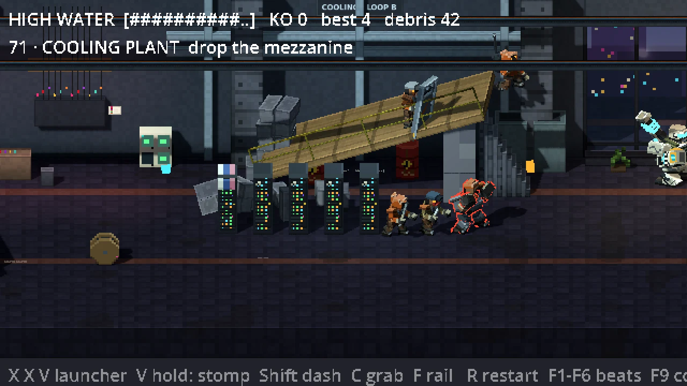
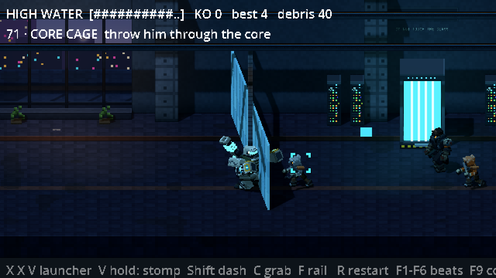
F71 moods: the floor is one level up and a few minutes later than F70, so the city plate stays at dawn throughout. The rooms run through:
- the farm: cool office tubes in grey morning light
- the cold aisles: server blue
- the patch room: warm tungsten
- the cooling plant: steam cyan
- the window: first sun raking in low
- the core cage: lit cyan by the core, then blacked out when the core breaks (Drywall's blackout)
The cast: light, crews, heads
Gallery's lookbook, Jonas's picks L1, C2, H1 · all frames 640 × 360, nearest-neighbourL1. The characters get their own key and rim light, on a render layer that only the cast draws on. It follows Guilty Gear Xrd's per-character light and TF2's rims. The key is a weak warm light from the camera side. The rim is a cool light from behind and above, and it lands on the tops of heads, shoulders and fists. The floors keep their mood, and the gang stops sinking into the brick. On the Web at 1440p the paired A/B is within noise: −0.33 to +0.35 ms per spot over three runs, with no draw calls added. ?nocharlight switches it off.
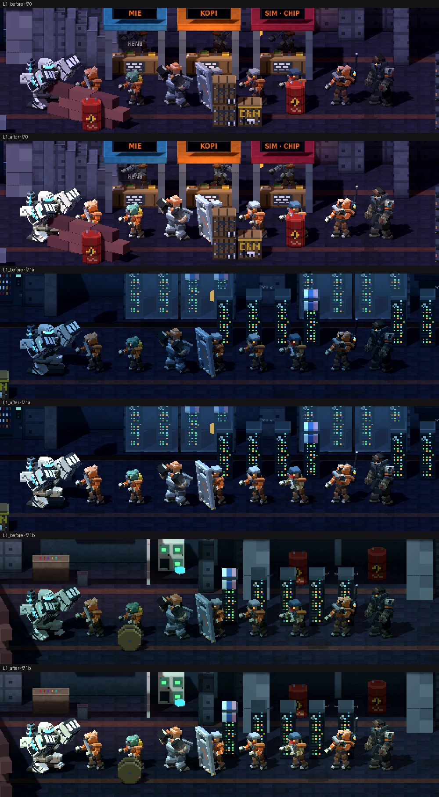
C2 and H1. The garment is the crew, and one orange item marks the gang. Each role keeps its shape in every crew. The spawn tag is Hitlag's Enemy.crew, and VoxelRig.set_crew swaps in <model>_<crew>.vox at spawn.
- Toll Crew (F70): hi-vis lime over black hoodies, bone stripes, an orange beanie, a VISITOR lanyard.
- Karaoke Committee (the F70 Doorman and gallery): plum satin, gold piping, headphones round the neck, an orange rag.
- Netters (F71): utility orange, a bone band, white hard hats, cable coils in nail-polish colours.
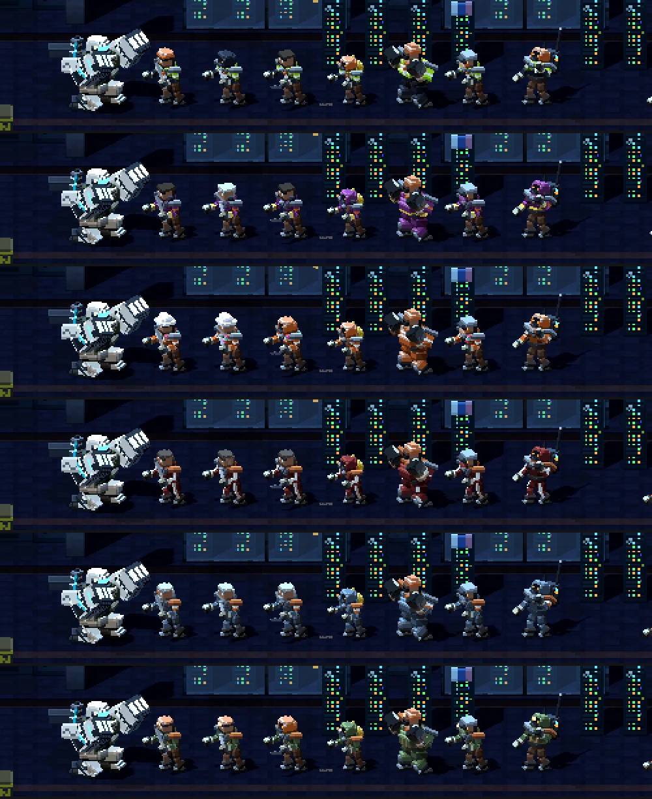
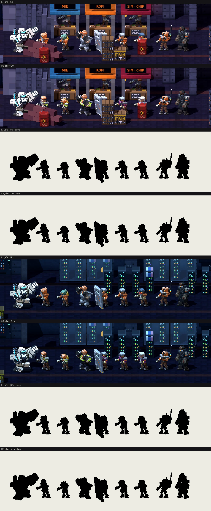
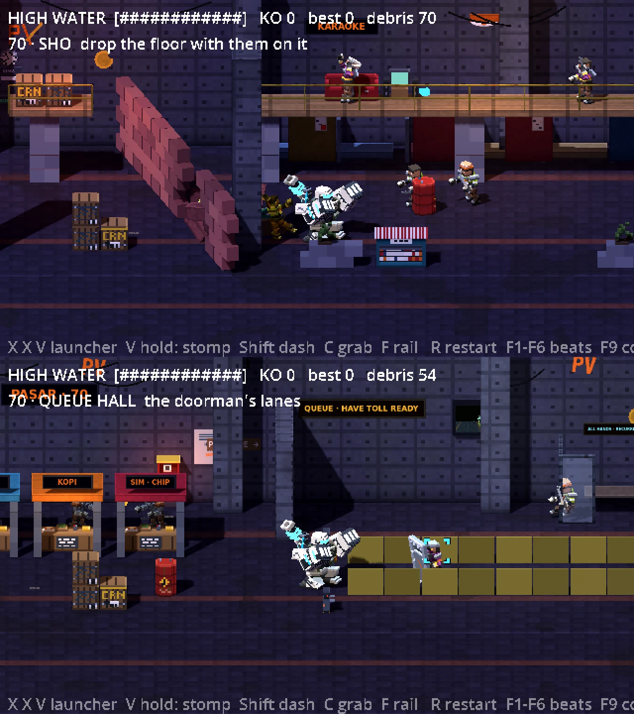
Shape pass (Gallery's round 2; Jonas asked for "a circle guy, a triangle guy, a square guy"). Each role now has one primary shape that should read in solid black at 1×:
- Soldier ▲: narrow at the top, the hoodie's hem flaring, baggy cuffed trousers, long feet.
- Runner ▶: a short, 3-deep body leaning 25° even at rest, with the gold bag twice its old size as the broad end.
- Ballast ●: a ball of a body on short legs with a sunk head, concrete paint-tin fists and cement sacks.
- Doorman ■: a square torso under a flat white riot helmet with a smoked visor, on pillar legs. He stays square without the door.
- Netter ⌒: the hunch is built into the model and the head is pushed out. The pack is 1.4× as the hump, and the mast is the highest point.
- Lookout ⚲: a new model, with a big round head in headphones on a thin body and long legs.
- Big Rat ▮ (R2): the coat hangs open on a white vest with lapels, and its edges drop straight. The bone trophy is a hump on the far shoulder, and the forearms are taped.
- Enforcer ▼: pauldrons 1.2×, and the waist a row in on each side. The gloves are unchanged.
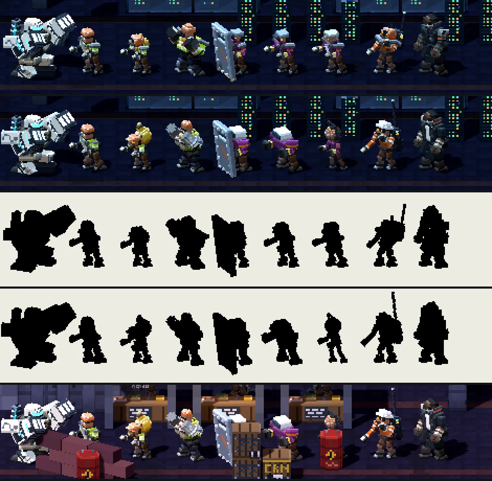
Black test: the Runner, Doorman, Netter, Big Rat and Lookout name themselves. Ballast's ball is clearer in colour than in black, because his guard pose lifts the tins; that is Armature's to judge. The Soldier's triangle is the mildest shape of the set.
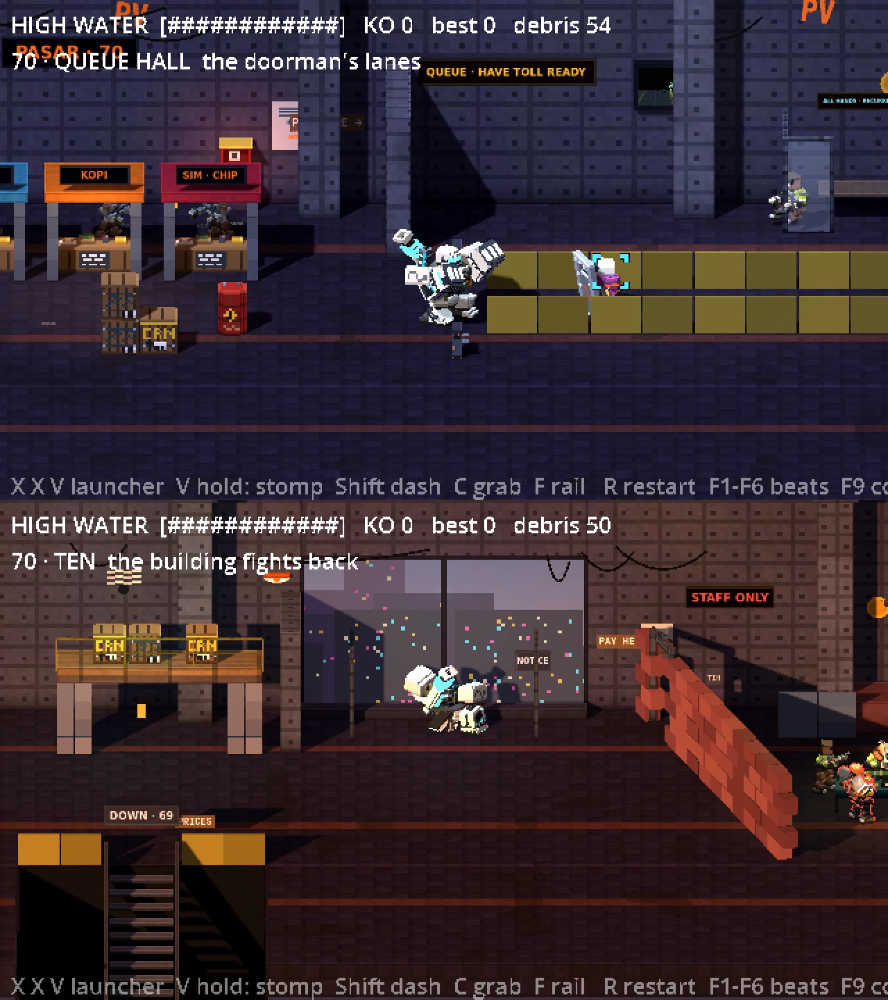
Saki and the Collector. Saki ⧗ is the hourglass. The top is a slate coat worn over the shoulders like a cape: a square yoke, a bone 3 on the back, and it hangs to the knee behind her. It is a prop, so she can shrug it off. Her waist is where the boiler suit's arms are knotted, and the suit's legs flare to wide cuffs. She has bone hand wraps, a scar, and her hair pulled back with a grey streak. Her one orange item is the vault key's lanyard. She is built on the ganger skeleton, so Armature's saki_* poses fit as authored. The Collector ◆ wears a slate puffer that is widest at the middle, with his head sunk into the collar and the hood lined in orange. He carries THE BOOK, an oxblood ledger, under his near arm.
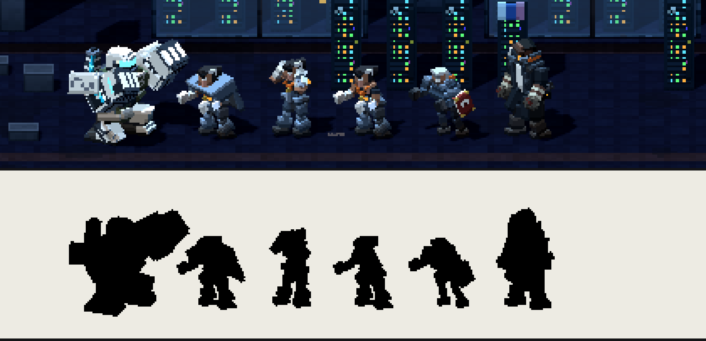
F73 The Wet Market, F75 Saki's Crown
Tidewater's and Drywall's tagged boxes, modelled · the F73 light and waterF73. Fifteen models are written in tools/vox/market_props.py and baked, from the F73 picks:
- the fish stall carrying the three-token price board (lift credit, Toll tokens and bus tokens)
- the ice bed and the gutting table
- the Stairwell Kings' landing desk and their water pump
- the hawker's cart
- the rice cooker, remade as one older than the tower and repaired many times (F71's router cooker is now the same model)
- a washer with the lift-credit reader
- the Nerps! oxygen bar and its cylinders
- the prayer-app shrine with its QR code and real incense
- a drone mail slot
- a fish crate, a fish and a hen
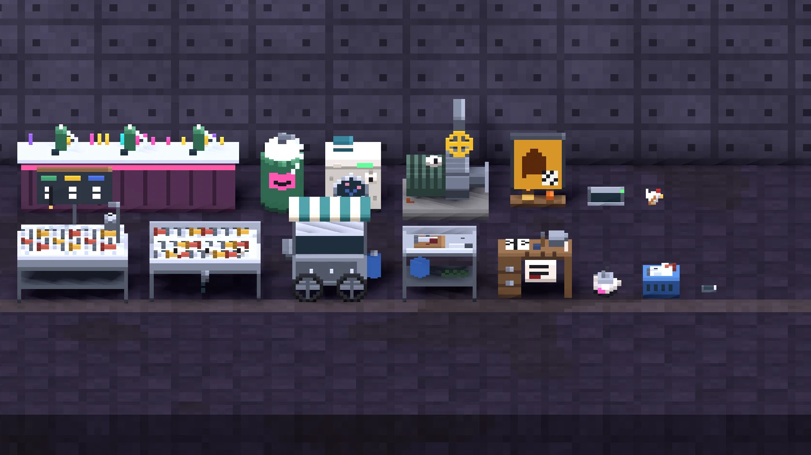
F73 light and water (Afterimage's note). The water takes the room's light, and its patches came in three greens. Under warm light they read as camouflage, and the sluice's teal made the foam mint, a cyan that belongs to High Water. Two changes fix it:
- The light: the mood keys move towards neutral, the warmth stays in the lamps' pools, and the sluice is slate grey-blue.
- The water: its palette uses close values in a grey drain green with bone-grey foam, so the streaks of the current carry the read.
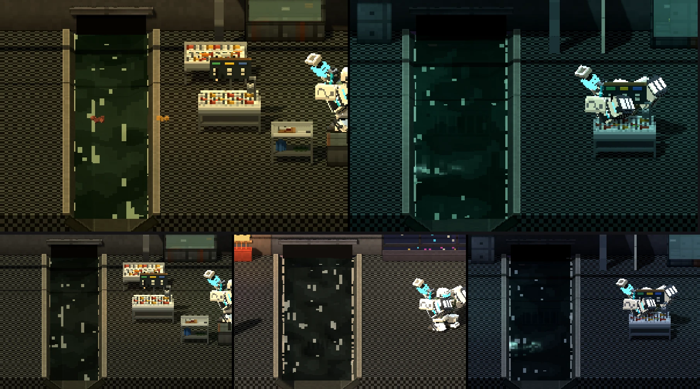
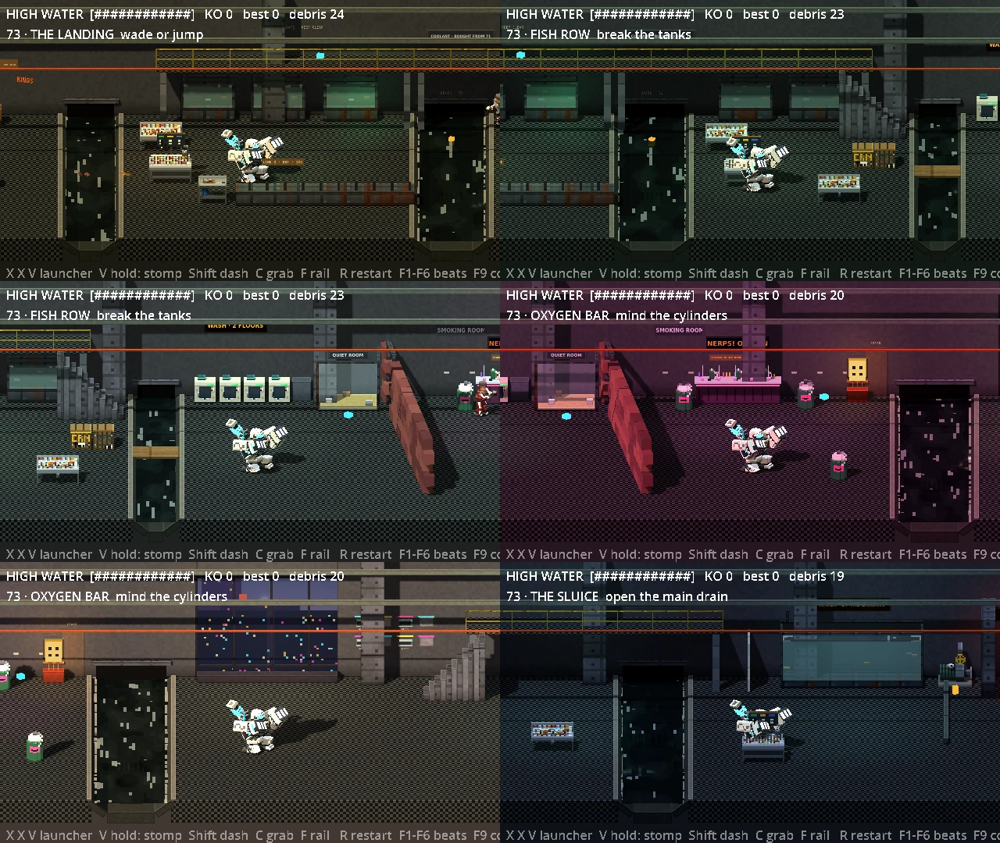
F75. These models are written in tools/vox/crown_props.py:
- The vault door: stepped steel with twelve bolt heads and a maker's plate. VaultDoor still spins the brass handwheel a notch at every hard hit, and the dents darken the model.
- The security wall's steel door: riveted, with a vision slot, push bar, kick plate, hazard strip and lock block.
- The ledger room: shelves of the old ledgers and THE BOOK's lectern.
- Saki's desk: black walnut, a blotter with a Final Notice on it, a banker's lamp, a note counter, cash, ledgers and a phone.
- Saki's chair: black leather with a high back.
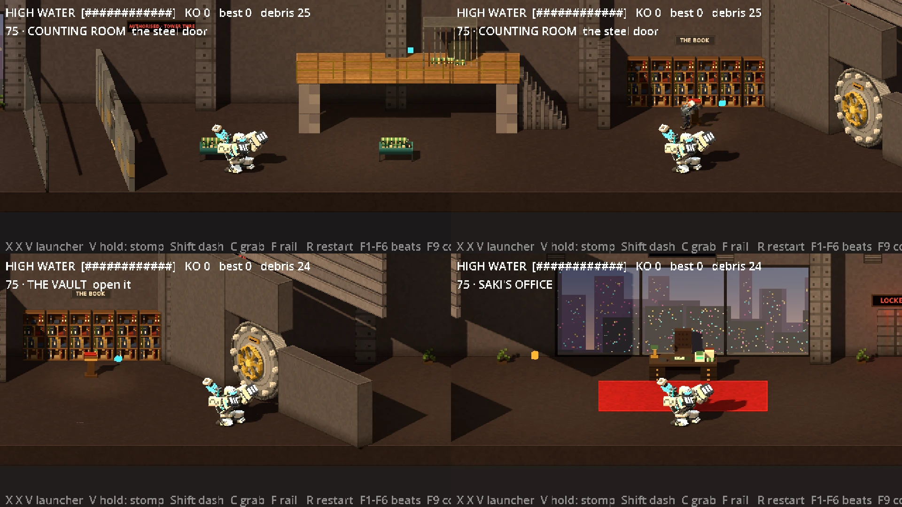
F74, the gang's own street (tools/vox/street_props.py, on Drywall's level-lab tags):
- The garden: raised beds with greens, chillies and bean canes, the rain tank, a bench, trellises with vines and hanging pots.
- The hot-bed capsules: round hatches, a lamp inside, the rota taped on.
- The mall directory.
- The food court: tables with dinner left on them, and the bolted seat rows. One seat model repeats at a 0.6 m pitch along any row.
- The pachinko hall: the islands, the back bank, and the dead machine turned shrine.
- The gym: paint-tin weights, benches and the heavy bag.
- The ring: an off-white canvas with PV-orange ropes on the near side and Tower Three slate at the back, under its lighting truss.
- The cinema: the torn screen and the champion's belt.
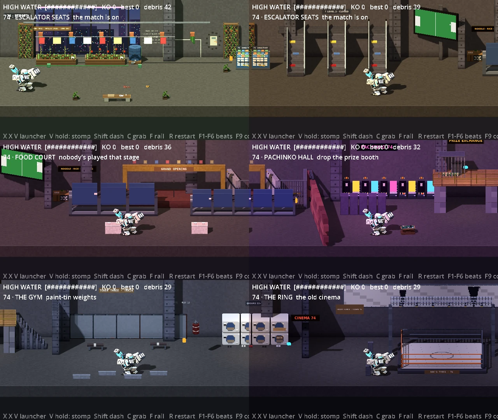
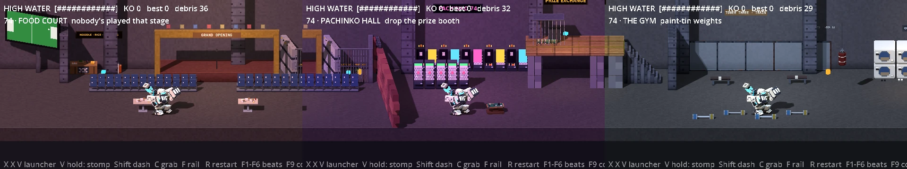
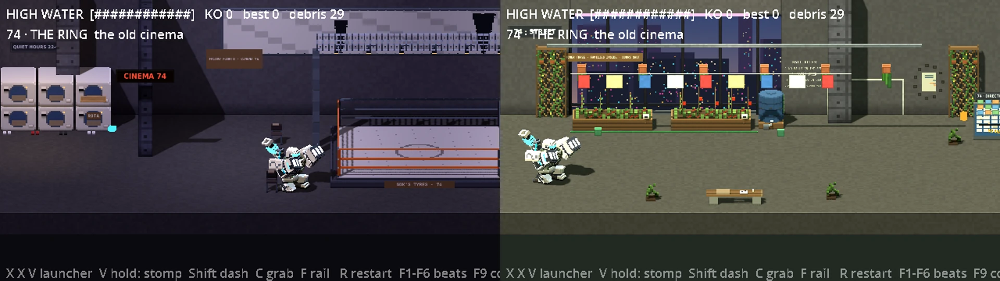
D1 built · the voxel dollhouse
Jonas picked D1 "with extra love and detail" · art-lab · Opticals' monitor and dive · Readout wires it inThis is the select running live. The tower is built in code from voxels.
- Inside: each floor's own level sits on its back wall, people walk the floors, and a small CCTV camera with a blinking REC lamp is bolted where Opticals' feed looks from.
- Outside: the gangs' build-outs are bolted onto the core's wings, in faded paint, with lit windows, AC units, awnings, dishes and tanks. There is scaffolding with people on it, gangways, laundry, drain pipes and cable sags. The signs are the Oh-Di clinic, a TOWER 3 blade sign and the 水位上升中 ticker. On the crown are water tanks, antennae with blinking tips, red beacons and the HIGH WATER billboard. Rain falls, the drowned city stands behind, and foam marks where the sea meets the tower.
- Selecting: the selected floor slides out like a drawer, and Opticals' CRT swings out on its arm to show that floor's feed: infrared when the floor is dark, torn when it is flooded. Confirm dives the camera into the tube.
- The finale: the sea rises floor by floor over the crown.
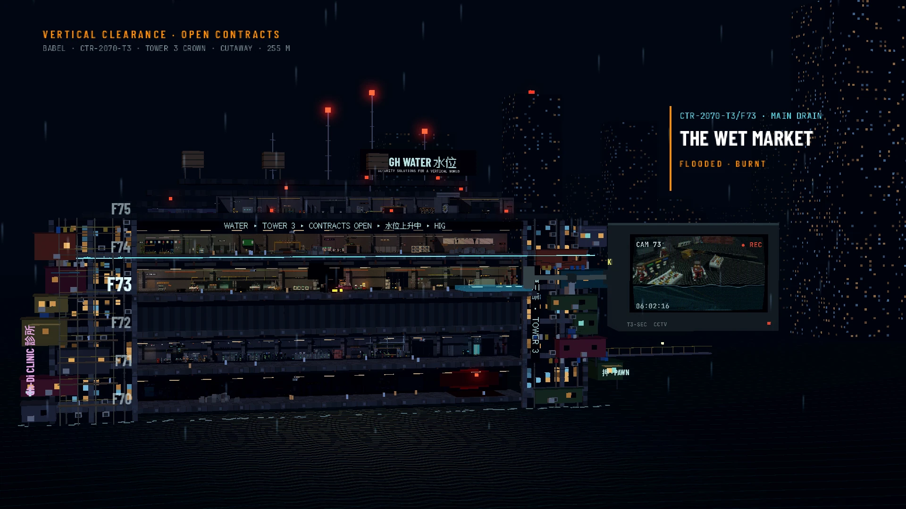
Web cost (cold headless Chrome, 1904×985, RTX 3070 via ANGLE/D3D11, tools/art/dollhouse_bench.tscn):
- Open versus closed (paired A/B): −0.00 to +0.03 ms of frame interval.
- One-time cost: the build takes 90–110 ms and opening takes 1.6 ms. The first draw spends 1.7 s compiling shaders, down from 6 s once everything moved onto one self-lit voxel shader with no scene lights. Readout will create the dollhouse where that stall can't be seen.
- Desktop: about 100 draw calls and 1.0 ms of GPU at 1080p.
The Tower 3 cutaway, four new looks
Jonas: "very svg drawn by the venerable early model generations" · in-engine renders · 2026-10-02RECOMMENDEDD1, the voxel dollhouse, with D3's monitor as its card
The tower becomes a real voxel model, sliced open at the front. Each floor is its own level seen through the cut, and the floor you pick slides out like a drawer.
- Why D1: it is the only direction where the select is made of the same stuff as the game. Voxel slabs, lit rooms, people moving and the drowned city around it all say Tower 3 before any text does. C6 turns into objects: water standing in the floor slot, a char heap with embers, the blacked-out floor under its one red lamp, rubble where the rig fell.
- Why with D3: Opticals' CCTV feeds are the strongest moving image on this board. The selected floor's feed can sit in the contract card on the right, so you see the model and the live floor together. D3 also stands on its own as a whole screen (see below), and is the safer pick if the 3D menu worries you on Web.
- What stays: Readout's selection, input and crown finale stay as they are. In the finale the sea rises up the model and over the crown.
D1 needs about 8 h, D1 with the D3 card about 10 h (Opticals' part included), and it can land Sunday morning. Pick D1, D2, D3, D4 or a cross. I build nothing until then.
Voxel dollhouse
D1A 3D voxel tower in a SubViewport behind the labels. Each floor's plate is its back wall, with slabs, end bays and ducts built from cubes in front. People move as specks, the camera drifts slowly, and the drowned floors below F70 run into a sea that reflects the lit floors.
- Cost
- ≈ 8 h
- Web
- medium · ~7,700 cubes in 14 MultiMeshes, about 100 draws, glow off on Web; a bench is still to run
- Fits
- the game's voxels, C6 as objects
Orange schematic
D2Contract Optics on paper: each plate dithered to 1-bit orange, huge floor numbers, hazard chevrons under the selection, a scanline wipe on each move. C6 shows as marks in the same ink: ruled water, a black burn blot, a crossed-out collapse, a DARK stamp.
- Cost
- ≈ 4 h
- Web
- low · 6 textured rects with one shader, canvas text
- Fits
- NERV and MAGI screens, the HUD's orange
Monitor wall
D3Opticals' build: Tower 3's security office. Six CRTs show baked CCTV loops of the real floors with their crews at their posts. The selected feed fills the big monitor over the contract card. Dark floors drop to IR, flooded floors lose hold, F72 shows NO SIGNAL. On confirm the camera zooms in and the tube collapses.
- Cost
- ≈ 6–8 h (Opticals, with Readout's hook)
- Web
- low · 7 rects with one CRT shader; desktop < 0.1 ms (within noise), Web ≤ 0.3 ms (about 0.5 ms on an integrated GPU, estimated); about 0.36 MB of feed strips
- Fits
- the codec, the optics, the found-footage voice
Split-flap board
D4 · wild cardThe lobby departures board: every floor is a row of flaps (name, contract, state) over a slot showing its level. Moving the selection rattles the rows over to the new state, in orange. The mundane future, made literal.
- Cost
- ≈ 3–4 h
- Web
- low · about 250 cells drawn per frame; static rows can be cached
- Fits
- the lobby, the Toll, the queue hall
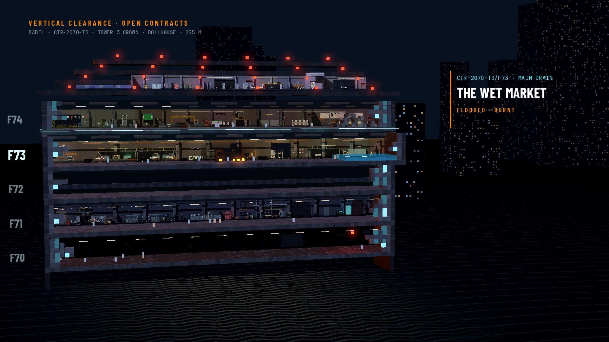
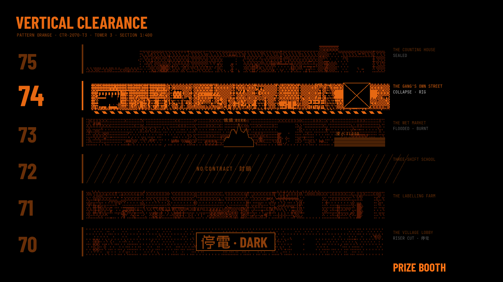
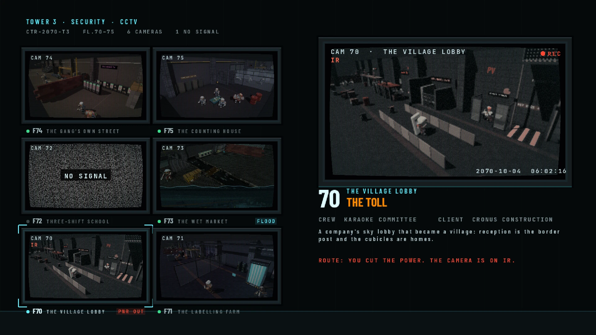
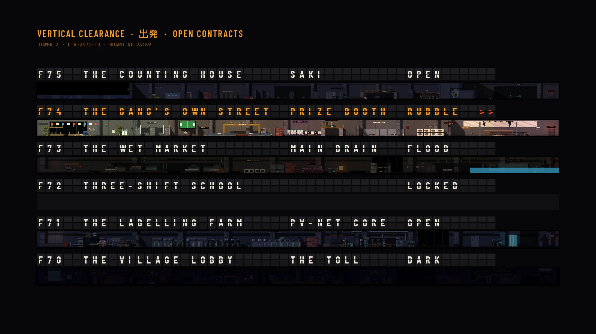
All four are in-engine renders (tools/art/tower_lab.tscn -- look=voxel|schematic|flap; D3 is Opticals' monitor_wall on optics-lab). They use the real plates and the C6 states of a demo run: F70 dark, F73 flooded and burnt, F74's rig down. None of them touches tower_select.gd yet. The pick becomes a visual layer behind Readout's selection, with one hook from him.
C6 · Your route on the cutaway
tier 3 · what you did to each floor, drawn on its plate · built on art-labWhen a contract ends, the floor is boiled down into a small record kept with its LEVEL REGISTER entry. The record holds four things. First, where water stands or has left tide marks, and where soot and blast scorch are, all read off Sim's cells and scar grid in 5-pixel slices along the floor. Second, whether the power is out, and where the emergency red hangs. Third, what came down: dropped decks and breached walls. The cutaway draws that record over the floor's plate. Flooded floors hold water to a tide line. Burnt floors carry char along the floor, flame tongues up the walls and soot pooled under the ceiling, with a few embers still in it. Blacked-out floors stay dark except for the one red lamp. Collapses show as ragged holes with their rubble heaped below. Each floor's overlay is baked once into one texture, about 1.5 ms, one floor per frame as the cutaway opens. After that it costs one textured rect a frame, plus a dim and a pulse on dark floors. The newest run's damage replaces the last.
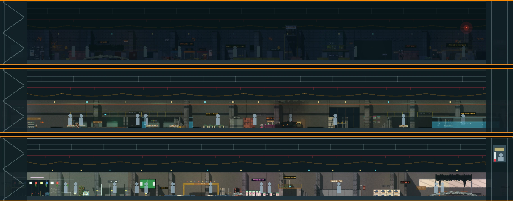
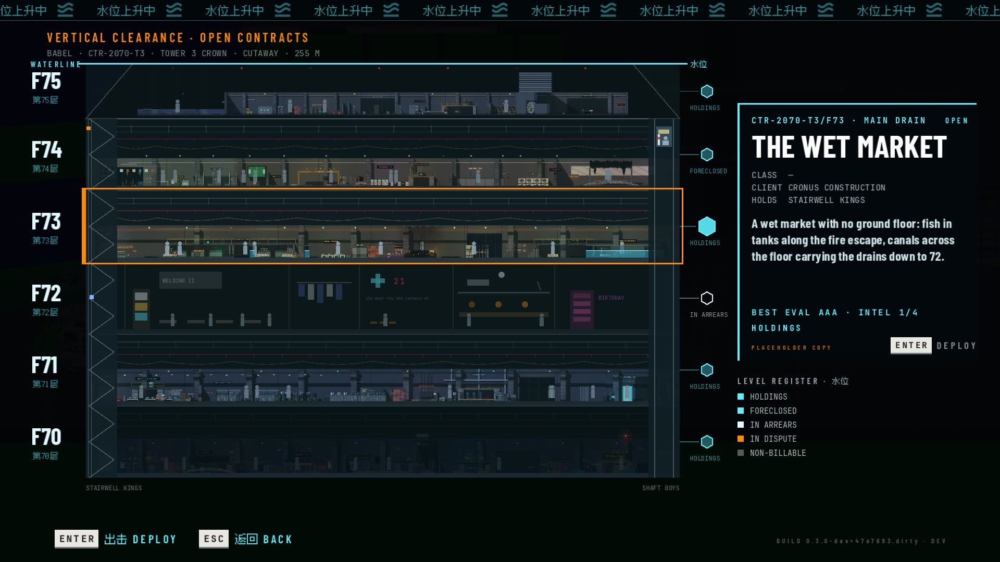
Tower 3 cutaway plates
for Readout's level select · each floor rendered as a true sectionEvery playable floor is rendered from the level itself: orthographic, straight on, end to end at one scale. The floor is shot in eight segments so the moods follow along the lane, and it's transparent above the ceiling and through the glass. Each plate is 1520 × 184, twice Readout's 760 × 92 band. The floor fills the lower half, and his line art keeps the ceiling above it. F72 has no level, so it stays his drawing. The plates are in assets/ui/cutaway/f70–f75.png, made by tools/art/cutaway_plates.tscn.
A4 · The floor remembers
Jonas picked B for every state (2026-10-01) · builtThe Sim's cell state is a 0.5 m RGBA8 texture: wet, charge, heat and fuel gas. Blockwork samples it on every floor block, and the rules read the same cells, so what you see is what the rules read. The Sim binds it at floor start. The states live in value and texture, never in a new hue. Charge is a cold white, and embers are a warm white; night vision keeps both.
- Wet: blocky mirror puddles with a lit lip and glints, damp round them.
- Charge: single blocks flash for one 12 Hz frame, and the seams hum, shimmering block by block. The flashes are dense enough, and the hum bright enough, to hold up under the night-vision grade.
- Heat: char with a grey ash rim round the burn, and a few glowing seams in the hottest cells.
- Gas: drifting bands at knee height, in a 4 × 4 ordered dither.
Web cost (headless Chrome at 2560 × 1440, a cold browser per run, ?quiet, and Slipway's wall-clock frame timing). It's a paired A/B at three beats per floor, with states bound and unbound in alternating 2 s windows:
- F73: +0.18, −0.07, −0.13 ms. With every cell at 0.8 in every channel (the worst case): +0.13, −0.30, +0.17.
- F71: +0.07, +0.23, 0.00 ms. Worst case: +0.27, +0.06, −0.10.
The answer first
recommendation and what you pickRECOMMENDEDRoute A, Blockwork, with one pipeline for every prop
The world is built of 0.125 m blocks, as the people are built of voxels.
- One shader gives every box a block pattern. Formwork concrete, carpet tile, steel plate, terrazzo, plywood and cladding are chosen per 0.125 m block (two character voxels, 4 screen pixels). A brick, a pier or a fracture piece carries the same blocks, so destruction matches the world with no extra work. It adds no triangles and no textures.
- Props are modelled by code in Blender, once. props_blender.py writes 8 props now, and each exports three finishes: remeshed into blocks for route A, chamfered with baked AO for route B, flat for route C. The film uses the same source files, so Opticals' recruitment film and the game share the pipeline (see hero assets).
- Light: the window is the one shadow-caster. It draws the mullion bars across the floor. The scene uses at most six unshadowed OmniLights, additive light pools, emissive signs and neon, and a mood per section. No LightmapGI: baked light cannot follow a floor that falls down.
- The city: a panorama rendered from Babel's own 1,260-building data for the far city, shader-lit towers for the middle distance, and an interior-mapped facade across the street. All three are parallax layers on the camera.
About 18 h to production for Floor 70. No downloads are needed. Web risk is low: every route held 60 fps in Chrome on this machine, and route A costs no more draw calls than the greybox. Pick A, B or C (or say what to cross); I build nothing until then.
Blockwork
AA voxel-scale environment with procedural block materials. The world reads as the characters do; every piece that breaks is a box, and boxes are native here.
- Cost
- ≈ 18 h
- Web
- low · 369 draws in the mock
- Fits
- voxel rigs, masonry, Kit boxes
Trim & Bake
BLow-poly hard-surface: chamfered Blender props with baked AO, and 32 px/m trim textures drawn in code. It looks the cleanest, but at 30 px/m the bevels are under one pixel.
- Cost
- ≈ 22 h
- Web
- low-medium · textures, 372 draws
- Fits
- the intro's close-ups more than the game
Ink & Grain
CFlat colour, light in three dithered bands, a one-pixel ink outline on everything, characters included. It has the strongest graphic identity, next to Shinkawa and Opticals' Cut-Out.
- Cost
- ≈ 17 h
- Web
- medium · outlines double the draw calls (679)
- Fits
- High Water's ink brand; touches the rig materials
What 640 × 360 can hold
the numbers every route answers to| Measure | Value | Consequence |
|---|---|---|
| screen density | 30 px per metre (orthographic size 12 over 360 px) | A 2 m vending machine is 60 px tall and a 0.3 m sign letter is 9 px. Detail below 0.07 m (2 px) does not survive. |
| character voxel | 0.066 m = 2 px | The enforcer is about 29 voxels tall. The environment must stay coarser, or the people stop being the sharpest things on screen. |
| environment block (A) | 0.125 m = about 4 px | Bricks (1.0 × 0.5), cinder courses (0.5) and their shatter pieces (halves) all divide into it, so fracture lands on block boundaries. |
| bevel (B) | 0.02–0.03 m = under 1 px | Chamfers vanish at game scale. Only the baked AO and silhouettes read. B pays off in the intro's close-ups. |
| texel density (B) | 128 px over 4 m = 32 px/m | One texel per screen pixel. Photo textures (ambientCG, Poly Haven) at 1K would shimmer and read as a different game. |
| outline (C) | 0.034 m hull = 1 px | Readable on every box, but every mesh draws twice. |
Blockwork
voxel-scale environment · procedural block materials · recommendedEvery surface is sampled in 0.125 m blocks. The shader picks each block's colour from a pattern: board-formed concrete with joints and tie holes, carpet tile with a quarter-turned pile and a corporate band every 6 m, terrazzo chips, plywood grain rows, steel plate with seams and rust. A one-pixel rim is lit on top edges and dark on side edges, from the BoxMesh UVs, and draws every brick's mortar line and every fracture piece's outline. Blender props arrive already remeshed into blocks, with AO baked per block.
A-2 · A-3 · A-4Destruction and mood
A-5 · A-6 · A-7Style tiles, prop kit, signs
How destruction reads
- Bricks, cinder cells, slabs and crates are boxes, and every box gets the block pattern in its own space, so a loose piece keeps its look while it tumbles.
- The one-pixel rim outlines every piece in flight, which is what makes a debris storm read at 640 × 360.
- Blender props (vending machine, kiosk) are already blocks. When one shatters, Debris spawns box chunks in the prop's key colour, and they look the same.
Shader list (Web-safe, Compatibility)
- blockwork.gdshader: 11 patterns, rim, floor grime, local or world space, vertex colour. ALU only, no textures, no screen reads. At 230k pixels, fragment cost is not the constraint.
- glass, pool (banded in 5 steps), card (the pano posterised to blocks), city_building, interior (quantised to 0.125 m): shared with the other routes.
Sign system
- DotGothic16 (OFL, already shipped) at 1/30 m per font pixel, so glyphs are exact pixels. Signs are wide and chunky, and plates auto-fit their text.
- Neon letters are built from glowing 0.125 m blocks on a stroke font, with a banded halo quad.
Prop kit
- Done by code: vending machine, server rack, desk + chair, planter, jersey barrier, toll kiosk, turnstile, cash cage.
- Next: water cooler, copier, filing cabinet, office sofa, lift call panel, hanging blade sign frame, fluorescent pendant, cable tray and junction box, sandbag and pallet barricade, mattress and cot for the cubicle homes.
- Kenney Furniture Kit (CC0, on H:) can be fed through the same remesh for anything we don't write.
Cost
- Productionise the shader and material table in Pal/LevelKit, and hook Debris/BrickWall to local space: 3 h.
- Ten more props through props_blender.py: 5 h. Restyle Kit.sign(): 2 h.
- Window wall, backdrop and lighting pass: 4 h. Dressing Floor 70: 3 h. Web check: 1 h.
Trim & Bake
low-poly hard surface · baked AO · trim texturesThe same Blender props, chamfered (0.02–0.03 m, two segments) with Cycles AO baked into the vertex colours. Structure uses StandardMaterial with object- or world-space triplanar trim textures drawn in GDScript: formwork with drips, carpet tiles, panel seams with rivets, stone chips. They are 128 px over 4 m, so one texel covers one screen pixel. This route is the intro's pipeline, run at game scale.
How destruction reads
- Masonry and slabs stay boxes; object-space triplanar keeps each piece's texture fixed to it.
- Props need a pre-fractured variant or an inner "core" material (concrete aggregate, rebar ends) to avoid clean cubes coming out of chamfered shells: +4 h.
Shader list
- StandardMaterial3D: triplanar, nearest-with-mipmaps, vertex colour for props, metallic for steel. Four 128² textures generated at load (about 200 KB of VRAM, zero download).
- Decals are not available in Compatibility (Godot's Decal node needs Forward+/Mobile), so graffiti and hazard tape become alpha quads.
Prop kit and signs
- The same 8 props plus the same ten more; each needs a bevel check and an AO bake (about 1 min each, headless).
- Corporate wayfinding plates carry the Tower 3 brand; the gang signs are hand-painted plywood and lightboxes.
Cost
- Trim set and material table: 3 h · ten more props: 6 h · fracture variants and inner material: 4 h · decals as quads: 2 h · light and backdrop: 3 h · dressing: 3 h · Web: 1 h.
Ink & Grain
flat colour · dithered light bands · one-pixel outlineA custom light() quantises light into three bands and breaks the band edges with a 4 × 4 Bayer dither on the 640 × 360 grid. Shade is tinted cool, light warm. Every mesh gets an ink hull one pixel wide: boxes grow along sign(VERTEX) so their corners stay closed, and other meshes grow along their normals. The voxel rigs are switched to the same ink shader, so the characters and the world are drawn in one hand.
How destruction reads
- The best-separated pieces of any route, because every fragment is outlined. The risk is noise: the 131-piece burst becomes a line-drawing storm. Outlines could be dropped on pieces under 0.03 m³.
Shader list
- ink.gdshader (custom light, Bayer), ink_outline.gdshader (next_pass, cull_front, unshaded); pools banded and dithered, the pano dithered to 5 levels.
- Cost: each mesh draws twice (679 vs 369 draws). Fix it by merging static dressing into one mesh per room and using MultiMesh walls, which Drywall has already proposed.
Sign system and characters
- Lettered signs, outlined plates, flat neon with dithered halos.
- The rigs need their materials swapped (Armature's lane). It is a one-line override here, but it changes the character look Jonas approved.
Cost
- Shaders to production: 2 h · rig material hook: 1 h · ten more props: 4 h · signs: 2 h · band and light tuning: 3 h · dressing: 3 h · batching for the outline cost: 2 h.
Side by side
the same frame, three finishes| A · Blockwork | B · Trim & Bake | C · Ink & Grain | |
|---|---|---|---|
| sits with voxel rigs | Best: the same language, a coarser grain | Weakest: smooth props next to blocky people | Good, once the rigs are inked too |
| destruction | Native: pieces are blocks | Masonry fine; props need fracture variants | Clearest pieces, but noisy in bursts |
| detail at 30 px/m | Block patterns, 4 px grain | AO only; bevels lost | Line and band |
| authoring | Code (shader + Blender remesh) | Code (Blender bevel + AO bake + trim) | Code (shaders), fewest props details |
| intro link | Same sources; the film uses B's finish | Identical pipeline | Matches Cut-Out's ink |
| draws · primitives (mock) | 369 · 60 k | 372 · 53 k | 679 · 51 k |
| hours | ≈ 18 | ≈ 22 | ≈ 17 |
| Web risk | low | low-medium | medium |
Light and the city beyond
Compatibility renderer · Web · windows onto BabelJonas: "we could start adding lighting, it'd add a lot too, windows and a city parallax in the background". This section compares the techniques in route A's frame (the other routes use the same layers: B raw, C dithered).
26-1Lighting on Compatibility and the Web
| Technique | Verdict | Why |
|---|---|---|
| LightmapGI | no | Rendering baked lightmaps works on Web, but the Web editor cannot bake them. Baking in Compatibility has open bugs, including a 4.6-dev regression (#111465; the workaround is to bake in Forward+ and switch back). The real problem is ours: a bake records shadows of piers and decks the player will knock down. After the first collapse, the baked light lies. At most, bake the indestructible shell (floor, core, RC columns); even that leaves baked shadow under a gallery that has fallen. File size grows with texel scale and directional mode; not measured, because we would not ship it. |
| one shadowed directional | yes | City light (night) or low sun (dusk) through the curtain wall is the only shadow caster. It gives mullion bars across the lane and correct shadows from falling pieces, for one shadow pass. |
| OmniLights, budget ≤ 6 per screen, no shadows | yes | The fluorescent pendant, the Toll's sodium lamp, the vending machine's face, the PV neon. Compatibility shades up to 8 lights per object by default; adding 8 more omni lights cost desktop about 0.1 ms and stayed at 60 fps on Web (bench below). The fallback for weak devices is to drop the omnis and keep the pools. |
| fake pools (additive quads) | yes | pool.gdshader: one quad, blend_add, no light slot, no shadow. Banded in A, dithered in C. The pools do most of the visible work (compare 26-2). |
| emissive signage and neon | yes | Unshaded materials plus a halo pool. Glow (bloom) is not relied on; the halo quad is the bloom. |
| mood per section | yes | Night, dusk and blackout are one function of four values: ambient, the directional light's angle and colour, the lamps on or off, and the pano's time of day. Proposal for Floor 70: Ki at night, Shō at night, Ten flickering (the Wrecker hits the lamps), Ketsu blackout after the Toll falls, then the city lights stay on outside. |
26-3Measured cost (Web export, Chrome, and desktop)
A bench build of this mock (art_mock.tscn as the main scene through an art_bench feature tag) runs each configuration for 5 s while the camera pans ±4 m. The machine is the dev PC (RTX 3070) in Chrome via ANGLE/D3D11. On the Web, frame time is locked to vsync, so the useful columns there are whether it holds 60 and its worst frame. The desktop run is uncapped (vsync off) and shows the headroom.
| Config | Web fps (run 1 / run 2) | Web worst frame | Desktop uncapped, mean | Desktop worst | Draws |
|---|---|---|---|---|---|
| A floor70 | 60.0 / 60.0 | 16.7 ms | 1.68 ms (594 fps) | 3.2 ms | 382 |
| B floor70 | 58.7 / 60.0 | 125 ms in run 1 (a first-use shader compile), 16.7 in run 2 | 1.87 ms | 4.9 ms | 386 |
| C floor70 | 60.0 / 60.1 | 16.7 ms | 2.17 ms | 6.1 ms | 702 |
| A + 8 extra omni | 60.0 / 60.0 | 16.7 ms | 1.78 ms | 4.5 ms | 383 |
| A fake light only | 60.0 / 60.0 | 16.7 ms | 2.18 ms | 7.1 ms | 383 |
| A collapse (110 pieces) | 60.4 / 60.1 | 18.8 / 21.4 ms | 2.28 ms | 9.4 ms | 464 |
| C collapse | 60.6 / 60.1 | 20.8 / 21.9 ms | 2.85 ms | 10.5 ms | 864 |
Web frames are vsync-locked, so 16.7 ms means "made it". I also tried to read main-thread render CPU time on the Web (viewport_get_measured_render_time_cpu), but it returned implausible values (tens to hundreds of ms at a steady 60 fps), so those numbers are not reported.
The shading choice does not decide Web performance. Draw calls and first-use shader compiles do: B's 125 ms hitch is the same problem as the known 1.5 s freeze at the first collapse. Whatever route is picked, its shaders join Drywall's Warmup. An integrated-GPU laptop has not been measured; that is the next check once a route is chosen.
26-4Windows and the city: five techniques
| Technique | What it is here | Cost | Verdict |
|---|---|---|---|
| panorama from Babel's data | tools/art/babel_pano.tscn reads the Dark City Shining Babel setting data (42 named buildings, 1,219 procgen buildings, streets, roads, mountains, sea) and builds it as boxes with the window shader. It renders a 140° strip from Tower 3 at floor-70 height (about 255 m), looking at the Pinnacle, in 10 slices, stitched to 2560 × 720. Night and dusk versions exist. It is our own asset, made from the setting data. | One quad, one 2.5k texture (about 100 KB PNG) | far layer |
| shader city | An earlier project's building.gdshader, adapted: hash-lit window grids, lit fraction per time of day from one uniform, haze. It runs on one merged mesh of about 12 towers in layer space. | One draw | mid layer |
| interior mapping | interior.gdshader: each window cell is a fake room (back wall, floor, lit ceiling panel, desk silhouette, blinds), traced from a virtual eye set per frame. The rooms shift as the camera pans, even though the camera is orthographic. | One quad, ALU only | near facade |
| parallax layers | All layers are children of the camera and slide back against its travel. follow is 0.95 far, 0.8 mid and 0.55 near. An orthographic camera gives no parallax for free, so this is what gives depth. | A few lines per frame | yes |
| glass: rain, reflection, haze | glass.gdshader: a tint, a soft reflection band and the lamps behind the camera reflected low, rain streaks (night only), and per-layer haze toward the sky colour. | One transparent quad per wall | yes, subtle |
| skybox / cubemap | A cubemap needs a perspective camera to show parallax. Under our orthographic camera the pano card gives the same view for less. | — | no |
26-6Parallax: the camera pans 8 m
26-7The view from Tower 3, rendered from Babel's data
Scroll sideways. Night and dusk, 140°, the Pinnacle (Takam Tower, 700 m) left of centre, and the ridge on the right. It is boxes and one window shader, lit by one uniform. Neighbours closer than 160 m are left out; the interior-mapped near layer plays them.
Asset sourcing
what exists, what could come in, what we writeI searched the local asset library first. Proposed download list: none. Every route is buildable from code plus what is already in the local library. Drywall's round-1 finding holds: kit meshes as they come "read as two games" next to the voxel rigs. The useful way to bring a pack in is as geometry fed through our own finish (remesh, flat or bake), never as-is.
| Source | Licence | Covers | Use |
|---|---|---|---|
| tools/art/props_blender.py (ours) | our code | vending, server rack, desk + chair, planter, jersey barrier, toll kiosk, turnstile, cash cage; next: cooler, copier, filing cabinet, sofa, lift panel, sign frames, pendants, cable tray, barricades, cots | primary: three finishes per prop |
| Kit / BrickWall / Slab (Drywall) | our code | piers, decks, catwalks, partitions, breach walls, gate, crates, barrels | structure; restyled by the route material |
| kenney/furniture-kit/2.0 (H:) | CC0 (License.txt in pack) | desk, deskCorner, chairDesk, computerScreen, pottedPlant, trashcan, lounge sofas, lampSquareCeiling, bookcases | optional geometry source for the remesh; credit Kenney if shipped |
| kenney/retro-urban-kit, city-kit-roads (H:) | CC0 | detail-barrier-strong, construction barrier/cone/light, detail-cables | optional, same way |
| quaternius/modular-scifi-megakit (H:) | Quaternius licence (QAL 1.0; keep out of public repos) | vents, pipes, cables, crates, computers | optional for the service core; heavy pack, pick single meshes |
| ambientcg rooftop materials, polyhaven street props (H:) | CC0 | photo PBR concrete, steel, fabric | no: photo texture at 32 px/m clashes; at most a colour-sampling reference |
| synty/polygon-office (H:) | Synty EULA, purchased | the ideal subject | no: not an open free-to-use licence (jam rule), and a different style |
| setting city data | Dark City Shining Babel | the city outside every window | rendered by us (panorama) |
| building.gdshader | earlier in-house code | hash-lit window grids | adapted for the mid layer |
| fonts in assets/fonts | OFL / Bitstream-DejaVu, already credited | DotGothic16, DejaVu Sans/Serif Condensed Bold, JetBrains Mono | sign faces per route; no new fonts |
Provenance. Once a route is picked, the asset provenance list gets a section "Environment (tools/art/)". It lists the props (authored by Claude as Plumb, written as code in props_blender.py, Blender 5.0 headless, primitives, bevel, remesh and AO bake, no image or 3D generation), the shaders, the Babel panorama (rendered from the setting data by babel_pano.gd), and any Kenney geometry with its credit. Like the voxel characters, these are written as code by an AI assistant.
Hero assets for the recruitment film
one pipeline with Opticals (boards/intro, treatment C)Jonas picked C, the High Water recruitment film, and asked for better assets than voxel ("clashes with the brand look"). The proposal already on the table is glossy code-modelled CGI for the ad with a closing cut to "actual footage". That fits one pipeline: every hero asset is a Blender script, and each script exports a glossy finish for the film and a block finish for the game. The ad and the game then show the same object, which makes the cut to "actual footage" a joke about the same thing.
| Asset | Film (glossy, trim finish) | Game (block finish) | Hours |
|---|---|---|---|
| HW enforcer "product" body | Hard-surface plates modelled per bone on the voxel rig's joint list (.rig.json), so the rig's poses drive it: graphite shell, bone-white panels, ranger-green webbing, cyan only on the emitters | stays Armature's voxel enforcer (the reference) | 6 |
| gravity glove, macro | Close-up hero with emitter rings and serials | voxel glove exists | 2 |
| railgun | Rails, capacitor cells, stencils | voxel railgun exists | 2 |
| "liabilities" (Vermin) | Stay voxel, frozen, shot flat on a halftone card: the ad sees people as inventory | as is | 0 |
| Toll kiosk + cash cage | Already written (trim finish); product-lit as the "grievance" | block finish | 0.5 |
| studio set | Black floor, turntable, a key and rim card, done in Godot with a "product" shader (matcap-style rim and key in light(), since Compatibility has no SSR or GI) | — | 2 |
| Babel skyline | The panorama above, at dusk, as the ad's backdrop | the window layer | 0 |
Pipeline: tools/art/*.py (Blender headless, -b --python, about 20 s for 8 props × 3 finishes) → build/art/props/*.glb → Godot. The blender MCP bridge was not running, so everything here ran headless. The Hyper3D and Hunyuan generators on that bridge are never used. About 12.5 h for the film's heroes, shared with Opticals: they own shots and lighting, and Plumb owns models.
For Jonas
picks and rulings- Route: A, B or C, or a cross (for example A with C's outline only on characters and thrown bodies). I recommend A.
- Gang colour: the brief says Petty Vermin are orange and rust. The level greybox uses PV pink neon. I used orange throughout; confirm, and Drywall's Pal.NEON[0] changes with it.
- Moods per section: night, flicker, blackout after the Toll, as proposed in 26-1? Dusk could instead be Floor 75's (Saki's glass floor).
- Hero pipeline: may Plumb model the film's enforcer body per bone, as above, with Opticals owning shots?
- Kenney geometry through the remesh: allowed (CC0, credited), or strictly our own props?